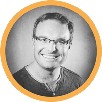

|  |
Uli KünzelPre-Sales Consultant at T-Systems Multimedia Solutions. Publishing Salesman, UX Consultant, Designer of Digital Services, Design Thinking Coach & Faciltator. I ♥ mountains, beer, guitar music, cities and coding. Currently I learn Russian. |
Here you find more about my hobbies
| Dates | Work |
|---|---|
| 2018 - 2019 | Pre-Sales Consultant at T-systems Multimedia Solutions |
| since 2013 | Board Member of "Förderverein der Jugendarbeit", Project Herrnhuter Spiele |
| since 2012 | Co-Host and Initiator of Global Jams in Dresden |
| 2010 - 2018 | User Experience Consultant at T-Systems Multimedia Solutions |
| 2008 - 2009 | Working Student at Aperto AG |
| Design Thinking Facilitation | ★★★★★ | Business Development | ★★★★★ |
| Qualitative Research | ★★★ | Front End Development | ★★ |
Contact Me on LinkedIn. Or find me on Twitter. You can also contact me directly.